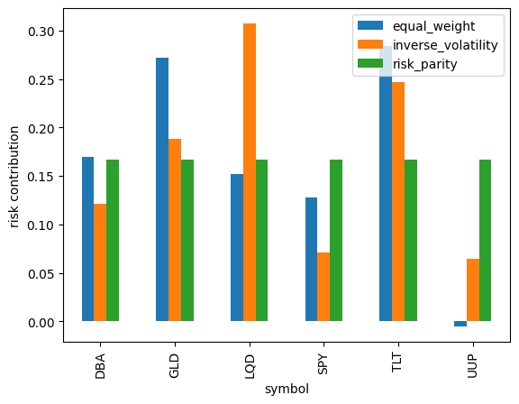
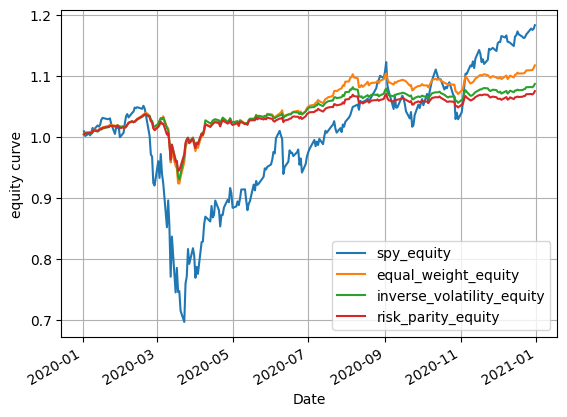

import numpy as np
import pandas as pd
import yfinance as yf
yf.pdr_override()
from pandas_datareader import data as pdr
import riskparityportfolio as rp16 Asset Allocation
In this chapter we conduct a data analysis related to asset allocation. Specifically, we analyze several portfolios consisting of six ETFs: DBA, GLD, LQD, SPY, TLT, UUP.
Using 2019 data, we construct four portfolios that we assume we hold during 2020, and then perform some analysis on how each of the portfolios performed during 2020. In particular we will:
- Use 2019 data to compute weights for four different portfolios as of end-of-day 12/31/2019.
- SPY only
- equally weighted
- inverse volatility
- risk-parity
- Calculate the estimated portfolio volatility for each of the three portfolios as of end-of-day 12/31/2019.
- For each of the three portfolios, calculate the estimated risk contributions of each of the assets as of end-of-day 12/31/2019.
- Calculate the realized daily portfolio returns for each of the portfolios during 2020.
- Calculated the realized annual return for each of the portfolios during 2020.
- Calculate the realized volatility for each of the portfolios during 2020.
- Calculate the realized Sharpe-ratio for each of the portfolios during 2020.
- Calculate and graph the realized equity curves for the three portfolios during 2020.
- Calculate the maximum draw down experienced by each of the portfolios during 2020.
- Calculate the realized 99% DVaR for each of the three portfolios during 2020.
16.1 Importing Packages
Let’s begin by importing the packages that we will need. All of them are standard except for the riskparityportfolio package, which we will use to calculate the weights for the risk-parity portfolio.
16.2 Weights, Portfolio Volatilities, Risk Contributions (2019 Data)
Using data from 2019 we will calculate the weights, estimates of portfolio volatility, and estimates of asset risk contributions for our various portfolios.
16.2.1 Reading-In Data
Let’s begin by reading in the 2019 data.
assets = ['SPY', 'TLT', 'GLD', 'UUP', 'DBA', 'LQD']
df_assets_weights = pdr.get_data_yahoo(assets, start='2018-12-31', end='2020-01-01')
df_assets_weights = df_assets_weights['Close']
df_assets_weights[*********************100%***********************] 6 of 6 completed| DBA | GLD | LQD | SPY | TLT | UUP | |
|---|---|---|---|---|---|---|
| Date | ||||||
| 2018-12-31 | 16.940001 | 121.250000 | 112.820000 | 249.919998 | 121.510002 | 25.450001 |
| 2019-01-02 | 16.910000 | 121.330002 | 113.169998 | 250.179993 | 122.150002 | 25.639999 |
| 2019-01-03 | 16.969999 | 122.430000 | 113.220001 | 244.210007 | 123.540001 | 25.500000 |
| 2019-01-04 | 16.940001 | 121.440002 | 113.150002 | 252.389999 | 122.110001 | 25.459999 |
| 2019-01-07 | 17.160000 | 121.860001 | 113.160004 | 254.380005 | 121.750000 | 25.350000 |
| ... | ... | ... | ... | ... | ... | ... |
| 2019-12-24 | 16.340000 | 141.270004 | 127.849998 | 321.230011 | 136.839996 | 26.260000 |
| 2019-12-26 | 16.370001 | 142.380005 | 128.080002 | 322.940002 | 137.169998 | 26.219999 |
| 2019-12-27 | 16.520000 | 142.330002 | 128.259995 | 322.859985 | 137.320007 | 26.090000 |
| 2019-12-30 | 16.530001 | 142.630005 | 128.490005 | 321.079987 | 136.820007 | 26.040001 |
| 2019-12-31 | 16.559999 | 142.899994 | 127.959999 | 321.859985 | 135.479996 | 25.969999 |
253 rows × 6 columns
16.2.2 Returns and Covariance Matrix
Next, we use pandas DataFrame methods to calculated the daily returns and returns covariance matrix for 2019.
df_returns_weights = df_assets_weights.pct_change()
df_returns_weights| DBA | GLD | LQD | SPY | TLT | UUP | |
|---|---|---|---|---|---|---|
| Date | ||||||
| 2018-12-31 | NaN | NaN | NaN | NaN | NaN | NaN |
| 2019-01-02 | -0.001771 | 0.000660 | 0.003102 | 0.001040 | 0.005267 | 0.007466 |
| 2019-01-03 | 0.003548 | 0.009066 | 0.000442 | -0.023863 | 0.011379 | -0.005460 |
| 2019-01-04 | -0.001768 | -0.008086 | -0.000618 | 0.033496 | -0.011575 | -0.001569 |
| 2019-01-07 | 0.012987 | 0.003458 | 0.000088 | 0.007885 | -0.002948 | -0.004320 |
| ... | ... | ... | ... | ... | ... | ... |
| 2019-12-24 | 0.004920 | 0.009432 | 0.001018 | 0.000031 | 0.002858 | 0.000000 |
| 2019-12-26 | 0.001836 | 0.007857 | 0.001799 | 0.005323 | 0.002412 | -0.001523 |
| 2019-12-27 | 0.009163 | -0.000351 | 0.001405 | -0.000248 | 0.001094 | -0.004958 |
| 2019-12-30 | 0.000605 | 0.002108 | 0.001793 | -0.005513 | -0.003641 | -0.001916 |
| 2019-12-31 | 0.001815 | 0.001893 | -0.004125 | 0.002429 | -0.009794 | -0.002688 |
253 rows × 6 columns
df_covariance_returns = df_returns_weights.cov()
df_covariance_returns| DBA | GLD | LQD | SPY | TLT | UUP | |
|---|---|---|---|---|---|---|
| DBA | 0.000049 | -0.000006 | -3.023833e-06 | 1.074811e-05 | -0.000011 | 1.983865e-06 |
| GLD | -0.000006 | 0.000054 | 1.262861e-05 | -1.586571e-05 | 0.000032 | -1.120170e-05 |
| LQD | -0.000003 | 0.000013 | 9.849972e-06 | -7.090972e-07 | 0.000019 | -1.459647e-06 |
| SPY | 0.000011 | -0.000016 | -7.090972e-07 | 6.250532e-05 | -0.000027 | 9.363556e-07 |
| TLT | -0.000011 | 0.000032 | 1.916895e-05 | -2.706504e-05 | 0.000057 | -1.888845e-06 |
| UUP | 0.000002 | -0.000011 | -1.459647e-06 | 9.363556e-07 | -0.000002 | 1.038399e-05 |
16.2.3 Weights
Let’s now calculate the weights of each asset in our four portfolios. The weighting schemes from SPY-only and equal-weight are self explanatory. Inverse volatility and risk-parity both have the effect of underweighting high volatility assets while overweighting low volatility assets.
Inverse Volatility: the weight for the \(i\)th asset is \(w_i = \frac{1/\sigma_i}{\sum_j 1/\sigma_j}\), where \(\sigma_i\) is the volatility of the \(i\)th asset.
Risk-Parity: intuitively, this methods chooses weight such that the risk that each asset contributes to the portfolio is equal. This idea can be translated in to an optimization problem involving the covariance matrix of the assets. We will use the riskparityportfolio package to do the optimization for us.
# SPY only
spy = np.array([0, 0, 0, 1, 0, 0])
# equal weight
equal_weight = np.ones(6) / 6
# inverse-volatility
volatilities = np.sqrt(np.diagonal(df_covariance_returns))
inverse_volatility = (1 / volatilities) / np.sum(1 / volatilities)
# risk-parity
risk_budget = np.ones(6) / 6
risk_parity = rp.vanilla.design(df_covariance_returns, risk_budget)
# putting weights into a DataFrame
df_weights = \
pd.DataFrame({
'symbol':df_assets_weights.columns,
'spy': spy,
'equal_weight': equal_weight,
'inverse_volatility': inverse_volatility,
'risk_parity': risk_parity,
})
df_weights| symbol | spy | equal_weight | inverse_volatility | risk_parity | |
|---|---|---|---|---|---|
| 0 | DBA | 0 | 0.166667 | 0.122781 | 0.123998 |
| 1 | GLD | 0 | 0.166667 | 0.116644 | 0.129908 |
| 2 | LQD | 0 | 0.166667 | 0.272929 | 0.169122 |
| 3 | SPY | 1 | 0.166667 | 0.108345 | 0.134926 |
| 4 | TLT | 0 | 0.166667 | 0.113483 | 0.097552 |
| 5 | UUP | 0 | 0.166667 | 0.265819 | 0.344494 |
Let’s plot the weights to compare the equal-weight, inverse-volatility, and risk-parity portfolios.
df_weights.plot(
kind='bar',
x='symbol',
y=['equal_weight', 'inverse_volatility', 'risk_parity'],
ylabel='weight'
);
16.2.4 Portfolio Volatilities
Next, we calculate the estimated portfolio volatilities at end-of-day 12/31/2019. Note that these are not the actual (2020) realized volatilites of the portfolios.
def portfolio_volatility(weights, cov):
return np.sqrt(np.dot(weights, np.dot(cov, weights.T))) * np.sqrt(252)# portfolio volatilities
df_portfolio_volatilities = \
pd.DataFrame({
'spy': [portfolio_volatility(df_weights['spy'], df_covariance_returns)],
'equal_weight': [portfolio_volatility(df_weights['equal_weight'], df_covariance_returns)],
'inverse_volatility': [portfolio_volatility(df_weights['inverse_volatility'], df_covariance_returns)],
'risk_parity': [portfolio_volatility(df_weights['risk_parity'], df_covariance_returns)],
})
df_portfolio_volatilities| spy | equal_weight | inverse_volatility | risk_parity | |
|---|---|---|---|---|
| 0 | 0.125504 | 0.040973 | 0.03509 | 0.032783 |
16.2.5 Risk Contributions
Finally, we calculate the risk-contributions of each asset in the various portfolios. Notice, that buy construction, in the risk-parity portfolio the risk contributions of each of the assets is equal.
def risk_contributions(weights, cov):
mctar = np.dot(weights, cov * 252) / portfolio_volatility(weights, cov)
return mctar * weights / portfolio_volatility(weights, cov)df_risk_contributions = \
pd.DataFrame({
'symbol':df_assets_weights.columns,
'spy': risk_contributions(df_weights['spy'], df_covariance_returns),
'equal_weight': risk_contributions(df_weights['equal_weight'], df_covariance_returns),
'inverse_volatility': risk_contributions(df_weights['inverse_volatility'], df_covariance_returns),
'risk_parity': risk_contributions(df_weights['risk_parity'], df_covariance_returns),
})
df_risk_contributions| symbol | spy | equal_weight | inverse_volatility | risk_parity | |
|---|---|---|---|---|---|
| 0 | DBA | 0.0 | 0.170063 | 0.121254 | 0.166660 |
| 1 | GLD | -0.0 | 0.271574 | 0.188357 | 0.166691 |
| 2 | LQD | -0.0 | 0.152007 | 0.307252 | 0.166669 |
| 3 | SPY | 1.0 | 0.127385 | 0.071514 | 0.166655 |
| 4 | TLT | -0.0 | 0.284166 | 0.247104 | 0.166663 |
| 5 | UUP | 0.0 | -0.005195 | 0.064519 | 0.166662 |
Let’s plots the risk contributions to compare the equal-weight, inverse-volatility, and risk-parity portfolios.
df_risk_contributions.plot(
kind='bar',
x='symbol',
y=['equal_weight', 'inverse_volatility', 'risk_parity'],
ylabel='risk contribution'
);
16.3 Portfolio Performance (2020 Data)
Now that we have our portfolios constructed, let’s see how they perform in 2020.
16.3.1 Reading-In Data
We begin by reading in price data from 2020 and calculating daily returns for each of the assets.
assets = ['SPY', 'TLT', 'GLD', 'UUP', 'DBA', 'LQD']
df_assets_performance = pdr.get_data_yahoo(assets, start='2019-12-31', end='2021-01-01')
df_assets_performance = df_assets_performance['Close']
df_assets_performance[*********************100%***********************] 6 of 6 completed| DBA | GLD | LQD | SPY | TLT | UUP | |
|---|---|---|---|---|---|---|
| Date | ||||||
| 2019-12-31 | 16.559999 | 142.899994 | 127.959999 | 321.859985 | 135.479996 | 25.969999 |
| 2020-01-02 | 16.500000 | 143.949997 | 128.229996 | 324.869995 | 137.009995 | 26.059999 |
| 2020-01-03 | 16.309999 | 145.860001 | 128.669998 | 322.410004 | 139.119995 | 26.090000 |
| 2020-01-06 | 16.350000 | 147.389999 | 128.240005 | 323.640015 | 138.330002 | 26.030001 |
| 2020-01-07 | 16.389999 | 147.970001 | 127.910004 | 322.730011 | 137.649994 | 26.120001 |
| ... | ... | ... | ... | ... | ... | ... |
| 2020-12-24 | 15.830000 | 176.350006 | 137.770004 | 369.000000 | 157.289993 | 24.350000 |
| 2020-12-28 | 15.770000 | 175.710007 | 137.860001 | 372.170013 | 157.360001 | 24.350000 |
| 2020-12-29 | 15.820000 | 176.350006 | 137.919998 | 371.459991 | 157.160004 | 24.270000 |
| 2020-12-30 | 15.980000 | 177.699997 | 138.100006 | 371.989990 | 157.500000 | 24.170000 |
| 2020-12-31 | 16.139999 | 178.360001 | 138.130005 | 373.880005 | 157.729996 | 24.240000 |
254 rows × 6 columns
df_returns_performance = df_assets_performance.pct_change().dropna()
df_returns_performance| DBA | GLD | LQD | SPY | TLT | UUP | |
|---|---|---|---|---|---|---|
| Date | ||||||
| 2020-01-02 | -0.003623 | 0.007348 | 0.002110 | 0.009352 | 0.011293 | 0.003466 |
| 2020-01-03 | -0.011515 | 0.013269 | 0.003431 | -0.007572 | 0.015400 | 0.001151 |
| 2020-01-06 | 0.002453 | 0.010490 | -0.003342 | 0.003815 | -0.005679 | -0.002300 |
| 2020-01-07 | 0.002446 | 0.003935 | -0.002573 | -0.002812 | -0.004916 | 0.003458 |
| 2020-01-08 | -0.004881 | -0.007502 | -0.001407 | 0.005330 | -0.006611 | 0.002680 |
| ... | ... | ... | ... | ... | ... | ... |
| 2020-12-24 | 0.003169 | 0.003985 | 0.003423 | 0.003890 | 0.003957 | 0.000822 |
| 2020-12-28 | -0.003790 | -0.003629 | 0.000653 | 0.008591 | 0.000445 | 0.000000 |
| 2020-12-29 | 0.003171 | 0.003642 | 0.000435 | -0.001908 | -0.001271 | -0.003285 |
| 2020-12-30 | 0.010114 | 0.007655 | 0.001305 | 0.001427 | 0.002163 | -0.004120 |
| 2020-12-31 | 0.010013 | 0.003714 | 0.000217 | 0.005081 | 0.001460 | 0.002896 |
253 rows × 6 columns
16.3.2 Portfolio Daily Returns
Now we can calculate the daily returns of each of the weighted portfolios.
df_performance = \
pd.DataFrame({
'spy_ret': (df_weights['spy'].values * df_returns_performance[df_assets_performance.columns]).sum(axis=1),
'equal_weight_ret': (df_weights['equal_weight'].values * df_returns_performance[df_assets_performance.columns]).sum(axis=1),
'inverse_volatility_ret': (df_weights['inverse_volatility'].values * df_returns_performance[df_assets_performance.columns]).sum(axis=1),
'risk_parity_ret': (df_weights['risk_parity'].values * df_returns_performance[df_assets_performance.columns]).sum(axis=1)
})
df_performance| spy_ret | equal_weight_ret | inverse_volatility_ret | risk_parity_ret | |
|---|---|---|---|---|
| Date | ||||
| 2020-01-02 | 0.009352 | 0.004991 | 0.004204 | 0.004419 |
| 2020-01-03 | -0.007572 | 0.002361 | 0.002304 | 0.001753 |
| 2020-01-06 | 0.003815 | 0.000906 | -0.000230 | 0.000270 |
| 2020-01-07 | -0.002812 | -0.000077 | 0.000114 | 0.000712 |
| 2020-01-08 | 0.005330 | -0.002065 | -0.001319 | -0.000820 |
| ... | ... | ... | ... | ... |
| 2020-12-24 | 0.003890 | 0.003208 | 0.002877 | 0.002684 |
| 2020-12-28 | 0.008591 | 0.000378 | 0.000271 | 0.000372 |
| 2020-12-29 | -0.001908 | 0.000131 | -0.000291 | -0.000573 |
| 2020-12-30 | 0.001427 | 0.003091 | 0.001796 | 0.001453 |
| 2020-12-31 | 0.005081 | 0.003897 | 0.003208 | 0.003586 |
253 rows × 4 columns
16.3.3 Annualized Returns
Now, let’s calculate the annualized return from the daily returns.
def annualized_return(ret):
return (((1 + ret).prod()) ** (252 / len(ret))) - 1df_annualized_return = \
pd.DataFrame({
'spy': [annualized_return(df_performance['spy_ret'])],
'equal_weight': [annualized_return(df_performance['equal_weight_ret'])],
'inverse_volatility': [annualized_return(df_performance['inverse_volatility_ret'])],
'risk_parity': [annualized_return(df_performance['risk_parity_ret'])],
})
df_annualized_return| spy | equal_weight | inverse_volatility | risk_parity | |
|---|---|---|---|---|
| 0 | 0.160935 | 0.105849 | 0.074651 | 0.065901 |
16.3.4 Realized Volatility
The realized volatility of the portfolios is simply the annualized standard deviation of the daily returns. Notice that the ordering of the realized volatilities of the strategies matches the estimated/forecasted volatilities calculated with 2019 data.
def realized_vol(ret):
return ret.std() * np.sqrt(252)# realized volatility
df_realized_vol = \
pd.DataFrame({
'spy': [realized_vol(df_performance['spy_ret'])],
'equal_weight': [realized_vol(df_performance['equal_weight_ret'])],
'inverse_volatility': [realized_vol(df_performance['inverse_volatility_ret'])],
'risk_parity': [realized_vol(df_performance['risk_parity_ret'])],
})
df_realized_vol| spy | equal_weight | inverse_volatility | risk_parity | |
|---|---|---|---|---|
| 0 | 0.335132 | 0.094387 | 0.085532 | 0.079909 |
16.3.6 Equity Curve
We can also calculate and plot the equity curve of the three strategies.
# equity curve
df_performance['spy_equity'] = (1 + df_performance['spy_ret']).cumprod()
df_performance['equal_weight_equity'] = (1 + df_performance['equal_weight_ret']).cumprod()
df_performance['inverse_volatility_equity'] = (1 + df_performance['inverse_volatility_ret']).cumprod()
df_performance['risk_parity_equity'] = (1 + df_performance['risk_parity_ret']).cumprod()
df_performance.head().T| Date | 2020-01-02 | 2020-01-03 | 2020-01-06 | 2020-01-07 | 2020-01-08 |
|---|---|---|---|---|---|
| spy_ret | 0.009352 | -0.007572 | 0.003815 | -0.002812 | 0.005330 |
| equal_weight_ret | 0.004991 | 0.002361 | 0.000906 | -0.000077 | -0.002065 |
| inverse_volatility_ret | 0.004204 | 0.002304 | -0.000230 | 0.000114 | -0.001319 |
| risk_parity_ret | 0.004419 | 0.001753 | 0.000270 | 0.000712 | -0.000820 |
| spy_equity | 1.009352 | 1.001709 | 1.005530 | 1.002703 | 1.008047 |
| equal_weight_equity | 1.004991 | 1.007363 | 1.008276 | 1.008199 | 1.006116 |
| inverse_volatility_equity | 1.004204 | 1.006517 | 1.006286 | 1.006400 | 1.005073 |
| risk_parity_equity | 1.004419 | 1.006181 | 1.006452 | 1.007169 | 1.006342 |
df_performance.plot(
y=['spy_equity', 'equal_weight_equity', 'inverse_volatility_equity', 'risk_parity_equity'],
ylabel='equity curve',
grid=True,
);
16.3.7 Maximum Draw Down
To calculate maximum draw down, let’s first calculate the draw downs through time for each of the portofolios.
def draw_down(equity_curve):
return (equity_curve - equity_curve.cummax()) / equity_curve.cummax()df_performance['spy_draw_down'] = draw_down(df_performance['spy_equity'])
df_performance['equal_weight_draw_down'] = draw_down(df_performance['equal_weight_equity'])
df_performance['inverse_volatility_draw_down'] = draw_down(df_performance['inverse_volatility_equity'])
df_performance['risk_parity_draw_down'] = draw_down(df_performance['risk_parity_equity'])
df_performance.head().T| Date | 2020-01-02 | 2020-01-03 | 2020-01-06 | 2020-01-07 | 2020-01-08 |
|---|---|---|---|---|---|
| spy_ret | 0.009352 | -0.007572 | 0.003815 | -0.002812 | 0.005330 |
| equal_weight_ret | 0.004991 | 0.002361 | 0.000906 | -0.000077 | -0.002065 |
| inverse_volatility_ret | 0.004204 | 0.002304 | -0.000230 | 0.000114 | -0.001319 |
| risk_parity_ret | 0.004419 | 0.001753 | 0.000270 | 0.000712 | -0.000820 |
| spy_equity | 1.009352 | 1.001709 | 1.005530 | 1.002703 | 1.008047 |
| equal_weight_equity | 1.004991 | 1.007363 | 1.008276 | 1.008199 | 1.006116 |
| inverse_volatility_equity | 1.004204 | 1.006517 | 1.006286 | 1.006400 | 1.005073 |
| risk_parity_equity | 1.004419 | 1.006181 | 1.006452 | 1.007169 | 1.006342 |
| spy_draw_down | 0.000000 | -0.007572 | -0.003786 | -0.006587 | -0.001293 |
| equal_weight_draw_down | 0.000000 | 0.000000 | 0.000000 | -0.000077 | -0.002142 |
| inverse_volatility_draw_down | 0.000000 | 0.000000 | -0.000230 | -0.000116 | -0.001435 |
| risk_parity_draw_down | 0.000000 | 0.000000 | 0.000000 | 0.000000 | -0.000820 |
Now, we can easily calculate the greatest draw downs.
# max draw down
df_max_draw_downs = \
pd.DataFrame({
'spy': [df_performance['spy_draw_down'].min()],
'equal_weight': [df_performance['equal_weight_draw_down'].min()],
'inverse_volatility': [df_performance['inverse_volatility_draw_down'].min()],
'risk_parity': [df_performance['risk_parity_draw_down'].min()],
})
df_max_draw_downs| spy | equal_weight | inverse_volatility | risk_parity | |
|---|---|---|---|---|
| 0 | -0.341047 | -0.112601 | -0.103766 | -0.090255 |
16.3.8 99% DVaR
The 99% DVaR can easily be calculated from the daily returns.
def dvar(ret):
return np.percentile(ret, 0.01)# 99% DVaR
df_dvar= \
pd.DataFrame({
'spy': [dvar(df_performance['spy_ret'])],
'equal_weight': [dvar(df_performance['equal_weight_ret'])],
'inverse_volatility': [dvar(df_performance['inverse_volatility_ret'])],
'risk_parity': [dvar(df_performance['risk_parity_ret'])],
})
df_dvar| spy | equal_weight | inverse_volatility | risk_parity | |
|---|---|---|---|---|
| 0 | -0.109077 | -0.033927 | -0.029064 | -0.028557 |